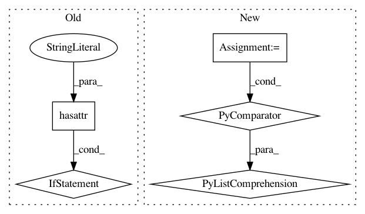

ed3a343d536daeb51eb0e39e630717c32c611766,abcpy/methods.py,Rejection,infer,#Rejection#Any#Any#,42
Before Change
// only run at first call unless quantile specified
if not hasattr(self, "distances") or quantile is not None:
self.distances = np.empty((0,1))
self.parameters = [ np.empty((0,1)) for ii in range(self.n_params) ]
if quantile is not None:
distances, parameters = self._get_distances(int(self.n_samples / quantile))
threshold = np.percentile(distances, quantile*100)
discard_rest = True
save_values = True
else:
distances, parameters = self._get_distances(self.n_samples)
discard_rest = False
save_values = True
else: // use precomputed distances
distances = self.distances
parameters = self.parameters
discard_rest = False
save_values = False
posteriors = self._apply_threshold(distances, parameters, threshold, discard_rest, save_values)
return {"samples": posteriors, "threshold": threshold}
After Change
threshold = np.percentile(distances, quantile*100)
// filter too dissimilar samples
accepted = distances < threshold
posteriors = [p[accepted] for p in parameters]
return {"samples": posteriors, "threshold": threshold}
In pattern: SUPERPATTERN
Frequency: 3
Non-data size: 5
Instances
Project Name: elfi-dev/elfi
Commit Name: ed3a343d536daeb51eb0e39e630717c32c611766
Time: 2016-10-19
Author: henri.vuollekoski@helsinki.fi
File Name: abcpy/methods.py
Class Name: Rejection
Method Name: infer
Project Name: biocore/scikit-bio
Commit Name: 19f160b307515b3c0868915d0f044332bba109e0
Time: 2016-03-24
Author: jai.rideout@gmail.com
File Name: skbio/util/_misc.py
Class Name:
Method Name: find_sentinels
Project Name: keras-team/keras
Commit Name: b95fcf7f52aca8ad0b1afb3cfc64c8eed534fafe
Time: 2017-07-29
Author: me@taehoonlee.com
File Name: tests/keras/backend/backend_test.py
Class Name: TestBackend
Method Name: test_gather